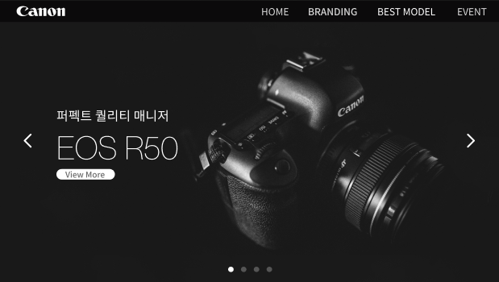

SUM 37˚ WEB PAGE REDESIGN

팀명 : CoNo(coding noye)
팀원 : 이수빈, 문예림, 임주희, 이종화
담당 업무 : Git 관리 및 서브 페이지 디자인 및 제작
프로젝트 기간 : 2023.06.30 ~ 2023.07.10
프로젝트 목표 : 기존 canon 사이트를 리디자인 하여 웹 제작하기
canon을 리디자인 할 때 canon의 기본 스타일 가이드를 중심으로 작업을 했다. 팀원들 모두 맡은 페이지 작업을 빠르게 제작해 주시고 피드백도 바로 수용해 수정해 주셔서 수월하게 작업할 수 있었다.
Grid를 사용하는 부분에서 사진이 깜빡거리는 오류를 고치지 못한 점과 JavaScript 다루는 기술이 부족해서 원하는 효과들을 표현하는 데에 부족함이 있었다.
다소 짧은 기간이었지만 페이지 제작을 원했던 대로 구현할 수 있었다는 점과 여러 개의 Swiper 작업을 이번 프로젝트를 통해 할 수 있게 된 것이다.
이번 프로젝트를 통해 Git 다루는 방법을 공부하게 되었고, JavaScript에 대해서도 더 많이 공부하게 되었다.
처음에 Git 관리자를 맡게 되었을 때 Git을 잘 다루지 못하는 상태여서 조금 부담이 됐지만, 개인 시간을 이용해 Git에 대해 공부하고 사용해 보니 금방 익힐 수 있었다. 이번 프로젝트를 통해 JavaScript를 더 알게 되었고, 팀원들과의 소통이 부족해서 아쉬웠지만 다들 맡은 자리에서 열심히 작업해 주셔서 감사했다.